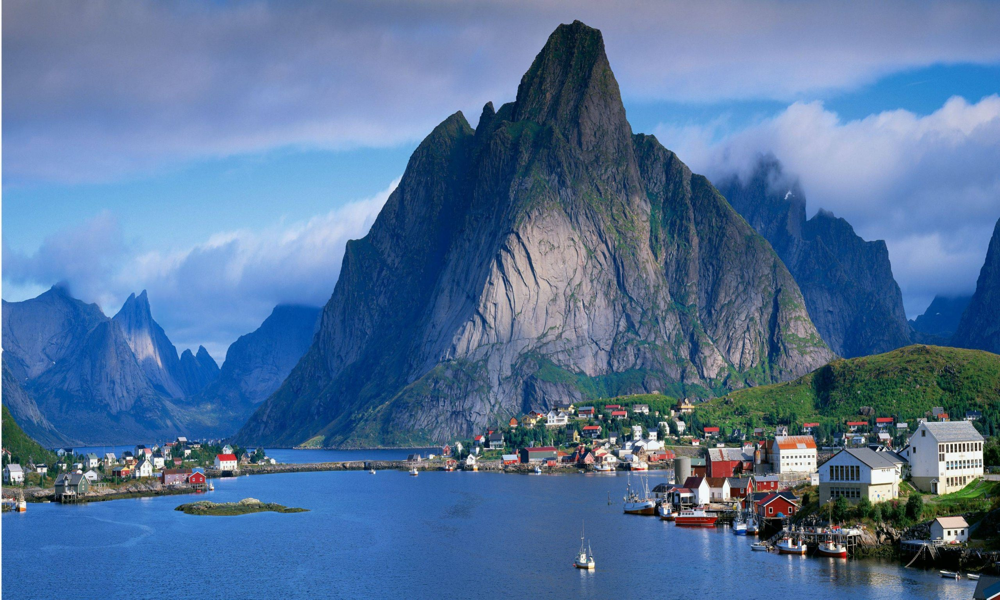

Indo-European peoples settled Norway’s coast in antiquity, establishing a permanent settlement near the present capital of Oslo some 6,000 years ago. The interior was more sparsely settled, owing to extremes of climate and difficult terrain, and even today the country’s population is concentrated in coastal cities such as Bergen and Trondheim. Dependent on fishing and farming, early Norwegians developed a seafaring tradition that would reach its apex in the Viking era, when Norse warriors regularly raided the British Isles, the coasts of western Europe, and even the interior of Russia; the Vikings also established.
First page